The goal of Lab 1A is to complete board bring-up and establish a reliable Arduino-based workflow for the redboard Artemis Nano.
In this lab, I verified code upload, onboard LED functionality, USB serial communication, and basic access to onboard sensors,
such as temperature sensor and PDM microphone.
Prelab
Installed/updated Arduino IDE and SparkFun Apollo3 board support; configured board and serial port.
Verified the programming pipeline by flashing a minimal LED/serial test sketch; confirmed stable serial output.
Reviewed documentation and noted the 3.3V-only I/O requirement for safe interfacing.
Lab Tasks
Installed/updated the Arduino IDE and the SparkFun Apollo3 (Artemis) board package. Selected SparkFun RedBoard Artemis Nano
and the correct serial port.
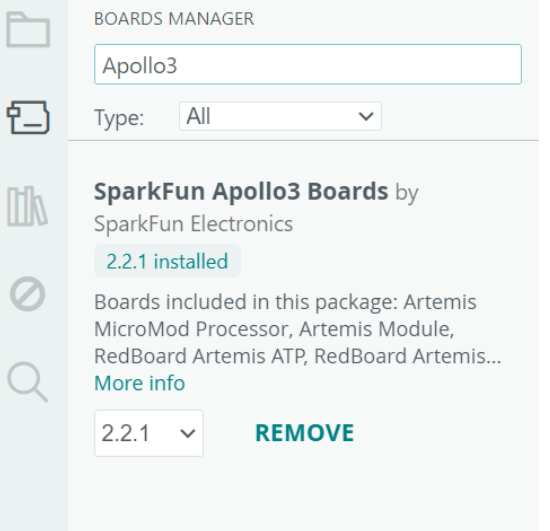
Figure 1.1. SparkFun Apollo3 Boards package installed.
I run the Blink file(File->Examples->01.Basics) to validate power, programming, and runtime execution. As a result, the onboard LED toggles at the expected rate.
Figure 1.2. The onboard LED toggles at the expected rate.
I run the Example4_Serial file in File->Examples->Apollo3, which added serial initialization and periodic prints and monitored output using Serial Monitor/terminal.
As a result, stable serial output is received without disconnects or corrupted text.
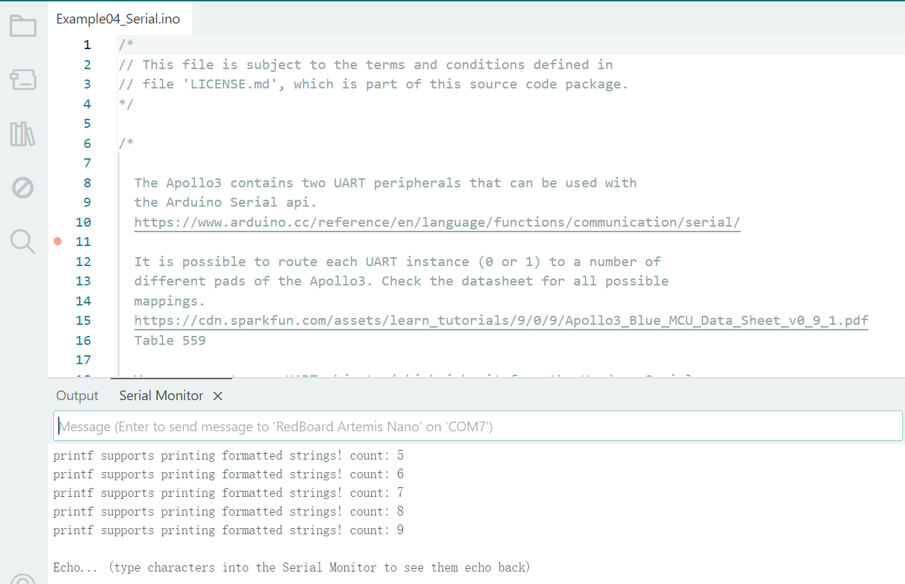
Figure 1.3. Stable Serial Monitor output.
I run the Example2_analogRead file in File->Examples->Apollo3, which read the onboard temperature sensor using the provided API/example and printed values at a fixed interval.
As a result, the readings fall within a reasonable range and update over time.
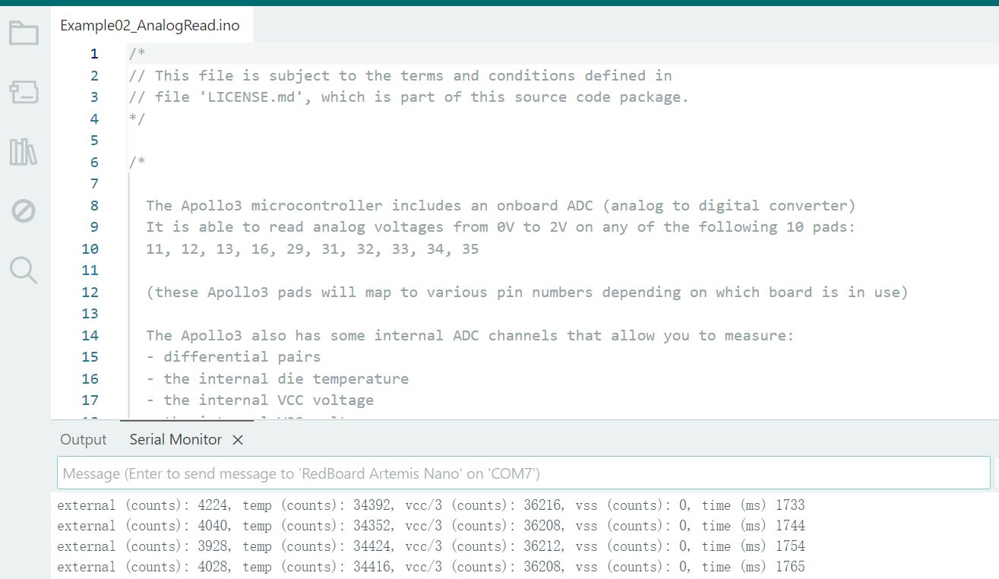
Figure 1.4. Temperature sensor readings.
I run the Example1_MicrophoneOutput in File->Examples->PDM, which configured the PDM microphone and streamed either raw samples or a simple metric (peak/RMS) to the serial output.
The reported signal changes noticeably between quiet conditions and speech/taps, indicating the microphone pipeline is working.
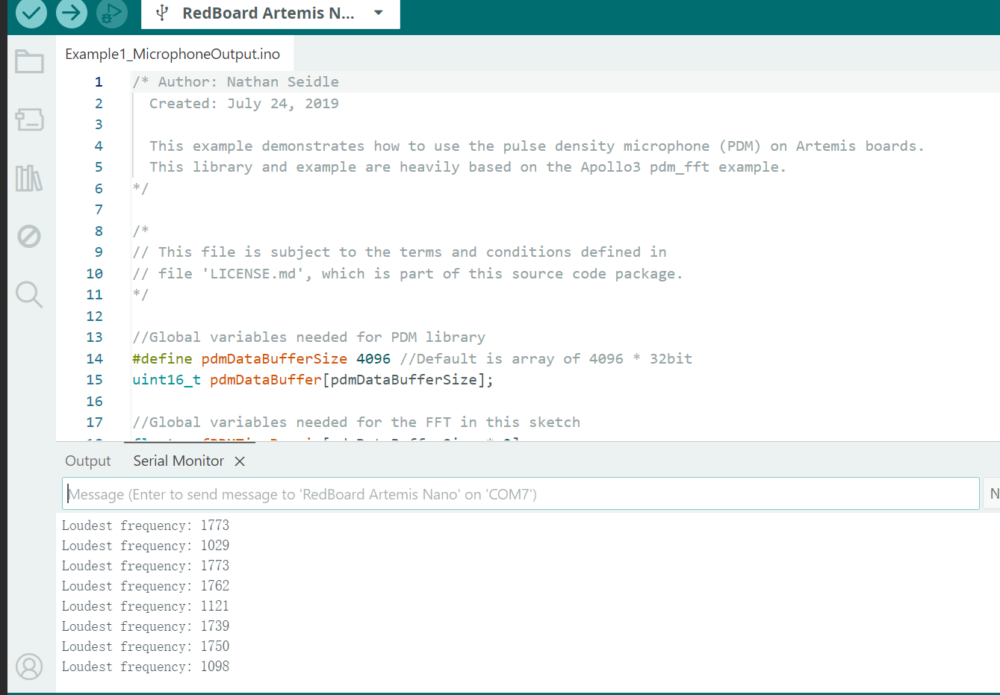
Figure 1.5. PDM microphone output.
Additional tasks for 5000-level students
In this additional 5000-level task, I implemented a simplified electronic tuner on the RedBoard Artemis Nano
by combining audio input and serial output.
The program samples the input signal on A0 at 8 kHz and stores 2048 points in a buffer, then uses the Goertzel
algorithm to estimate the signal energy at three predefined target frequencies: 440 Hz (A4), 523 Hz (C5), and 659 Hz (E5).
For each sampling window, it selects the note with the largest magnitude and prints the corresponding note name to the
Serial Monitor when the strongest frequency stands out above the others by a fixed threshold, which helps suppress
noise-triggered detections.
The objective of Lab 1B is to establish reliable Bluetooth Low Energy (BLE) communication between the computer and the Artemis board.
Using a Jupyter/Python interface as the BLE central, the computer sends commands to the Artemis and receives responses through BLE characteristics.
This lab also sets up a reusable framework for transmitting data from the Artemis back to the computer.
Prelab
BLE Background.
I reviewed the basic BLE workflow used in this lab, focusing on the central–peripheral connection model and the use of GATT
services/characteristics for data exchange. This provides the foundation for sending commands from the computer to the Artemis board
and receiving responses via notifications.
Computer Setup (Python + Virtual Environment).
I installed Python version 3.13 and set up an isolated virtual environment for the lab to avoid dependency conflicts.
After activating the environment, I installed the required packages and verified the environment for running the provided notebooks.
Then I downloaded the provided Lab 1B codebase. The repository contains an Arduino
sketch (ble_arduino) for the Artemis and a Python package/notebook (ble_python) used to connect, send commands,
and log results from a Jupyter workflow.
4. Jupyter Workflow
I started JupyterLab from the project directory with the virtual environment activated, ensuring the notebook server can access
the lab files. The notebook is used as the primary interface to send BLE commands and observe responses.
To prepare for Lab 1B, I first updated the Artemis board identifier on the computer by replacing the
artemis_address field in connections.yaml with the MAC address printed by my Artemis
(ensuring it is a valid 12-digit hexadecimal MAC, zero-padded if needed).
Next, I generated a new BLE service UUID (e.g., using uuid4()) to avoid accidentally connecting to a classmate’s board,
and I updated this UUID consistently in both ble_arduino.ino (BLE_UUID_TEST_SERVICE)
and connections.yaml (ble_service).
I then verified that all UUID definitions used by the Arduino sketch match those expected by the Python configuration file,
and that the command IDs in the Arduino enum CommandTypes match the mapping in cmd_types.py.
After these configuration updates, I re-flashed ble_arduino.ino onto the Artemis and ran the provided demo notebook in JupyterLab.
The notebook successfully connected to my board and verified basic GATT reads (e.g., RX_FLOAT and RX_STRING),
confirming the BLE pipeline was functional before starting the lab tasks.
On the Artemis side, I installed the ArduinoBLE library, compiled and flashed the provided BLE sketch (ble_arduino.ino),
and confirmed successful bring-up by printing the board’s BLE MAC address over serial (baud rate set to 115200).
Figure 2.6 BLE MAC address.
Lab Tasks
ECHO command (string round-trip).
I sent a string from the laptop to the Artemis using ECHO, and verified the laptop receives and prints an
augmented reply string from the Artemis.
ble.send_command(CMD.ECHO, "HiHello")
s = ble.receive_string(ble.uuid['RX_STRING'])
print(s)
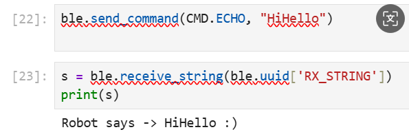
Figure 2.7. ECHO output.
SEND_THREE_FLOATS (parse values on Arduino).
I transmitted three float values from Python to the Artemis using SEND_THREE_FLOATS, then extracted and confirmed
the three floats correctly in the Arduino sketch.
I added a new command GET_TIME_MILLIS so the Artemis replies with a formatted string T:354391
via the BLE string characteristic.
ble.send_command(CMD.GET_TIME_MILLIS, "")
time.sleep(0.1)
s = ble.receive_string(ble.uuid['RX_STRING'])
print(s)
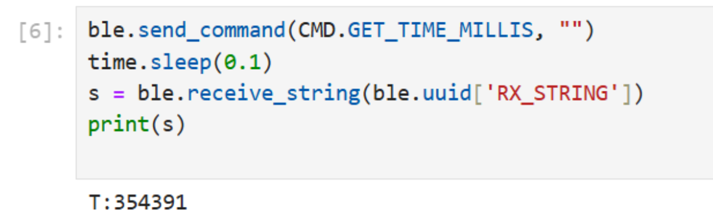
Figure 2.9. GET_TIME_MILLIS.
Python notification handler (parse time).
I registered a notification callback on the RX_STRING characteristic to handle incoming Artemis string notifications.
The callback decodes the message, filters for the T:354391 format, and extracts the integer timestamp.
To synchronize the asynchronous notification with the notebook cell, I used an asyncio.Event to block until the timestamp arrives (or times out),
then printed the latest parsed value to confirm correct parsing.
Code Snippet
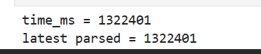
Figure 2.10. Parsed timestamp.
Measure message rate (stream time + compute throughput).
I started a timed streaming loop on the Artemis (via START_TIME_STREAM) which periodically sent timestamp notifications to the laptop. On the Python side, I registered a notification callback and counted the number of received timestamps over a measured duration, then computed the average message rate and effective throughput based on the timestamp payload size. In this run, the link achieved approximately 47.7 msg/s and an effective throughput of about 3.06 kbps.
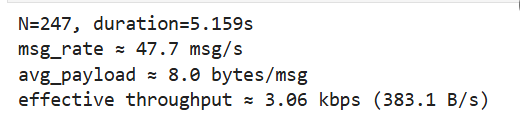
Figure 2.11 Buffered transfer stats.
Buffered timestamp array + SEND_TIME_DATA.
Instead of sending each timestamp immediately, I stored timestamps in a global array on the Artemis and implemented
SEND_TIME_DATA to transmit the stored timestamps afterward, verifying all data arrives on the laptop.
Paired time + temperature arrays + GET_TEMP_READINGS.
I recorded temperature readings alongside timestamps in a second array of equal length; implemented GET_TEMP_READINGS
to send paired (time, temperature) data; and parsed/stored them into two Python lists via the notification handler.
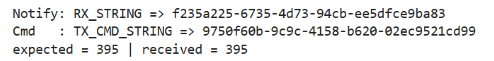
Figure 2.14. Paired data received.
Code Snippet(only demonstrate core code)
import asyncio, time, re
TX_STRING_UUID = "f235a225-6735-4d73-94cb-ee5dfce9ba83".lower()
def _find_uuid_by_value(target_uuid_lower: str):
for k, v in ble.uuid.items():
if str(v).lower() == target_uuid_lower:
return k, v
return None, None
async def task7_core(duration_s=2.0, timeout_s=8.0):
_, notify_uuid = _find_uuid_by_value(TX_STRING_UUID)
tx_cmd_uuid = ble.uuid["TX_CMD_STRING"]
time_list, temp_list = [], []
expected = None
def cb(sender, raw):
nonlocal expected
msg = bytes(raw).decode("utf-8", errors="ignore").strip("\x00").strip()
if not msg:
return
if msg.startswith("N:"):
try:
expected = int(msg.split(":", 1)[1])
except:
pass
return
mt = re.search(r"T:(\d+)", msg)
mc = re.search(r"C:([-+]?\d+(?:\.\d+)?)", msg)
if mt and mc:
time_list.append(int(mt.group(1)))
temp_list.append(float(mc.group(1)))
await ble.device.client.start_notify(notify_uuid, cb)
await ble.device.client.write_gatt_char(
tx_cmd_uuid, f"{CMD.START_TIME_STREAM.value}:".encode(), response=False
)
await asyncio.sleep(duration_s)
await ble.device.client.write_gatt_char(
tx_cmd_uuid, f"{CMD.STOP_TIME_STREAM.value}:".encode(), response=False
)
await asyncio.sleep(0.1)
time_list.clear(); temp_list.clear(); expected = None
await ble.device.client.write_gatt_char(
tx_cmd_uuid, f"{CMD.GET_TEMP_READINGS.value}:".encode(), response=False
)
t0 = time.time()
while time.time() - t0 < timeout_s:
if expected is not None and len(time_list) >= expected:
break
await asyncio.sleep(0.02)
await ble.device.client.stop_notify(notify_uuid)
return time_list, temp_list
The two approaches differ in where the bottleneck occurs. In Method 1 (streaming each sample immediately over BLE), the Artemis sends
each timestamp/reading as soon as it is generated, enabling near real-time monitoring and simple implementation. However, the effective
rate is limited by BLE throughput, notification overhead, and Python-side handling, so messages can be delayed or dropped when the send
rate is too high.
In Method 2 (buffer locally, then transmit later), the Artemis records data into arrays in RAM and only sends the stored data on demand.
This decouples sampling from BLE communication, allowing the board to record faster and more consistently, which limited mainly by the sensor
read time and the loop period, but it is not real-time and is constrained by available RAM; data can also be lost if the board resets
before uploading.
In practice, Method 2 can avoid BLE transactions during acquisition. The storage capacity is bounded by RAM: the Artemis has 384 kB
(≈ 393,216 bytes) of RAM, but not all of it is available for user buffers. If timestamps are stored as uint32_t (4 bytes)
and temperatures are stored as float(4 bytes), each paired sample is 8 bytes, so a practical upper bound is on the order
of ~30k–35k (time, temp) samples without risking memory pressure (similar reasoning applies if only timestamps are stored).
Additional Tasks (5000-level)
In this section, I evaluated the BLE communication performance between the laptop (BLE central) and the Artemis board (BLE peripheral).
The experiments focus on (1) effective data rate and protocol overhead under different reply payload sizes, and (2) reliability when increasing the
Artemis-to-laptop streaming rate.
1) Effective Data Rate and Overhead
I measured the end-to-end round-trip time (RTT) for a request–reply exchange while varying the reply payload length (e.g., 5 bytes and 120 bytes).
Using the measured RTT, I computed the effective data rate as payload_size / RTT. This quantifies how much useful throughput is achieved
after accounting for BLE/GATT overhead, and helps answer whether many short packets incur disproportionately high overhead compared to fewer larger replies.
Method
For each reply length, run multiple trials to obtain a stable mean RTT (and optionally standard deviation).
Compute effective data rate using the reply payload length divided by mean RTT.
Summarize results with at least one plot (effective rate vs reply size; optionally RTT vs reply size).
Code Snippet
Ls = [5, 20, 60, 120]
all_rtts = {}
for L in Ls:
rtts = await measure_rtt_for_len(ble, L=L, trials=80, timeout_s=2.0)
all_rtts[L] = rtts
print(f"L={L:>3} bytes | mean RTT={np.mean(rtts)*1000:.2f} ms | std={np.std(rtts)*1000:.2f} ms")
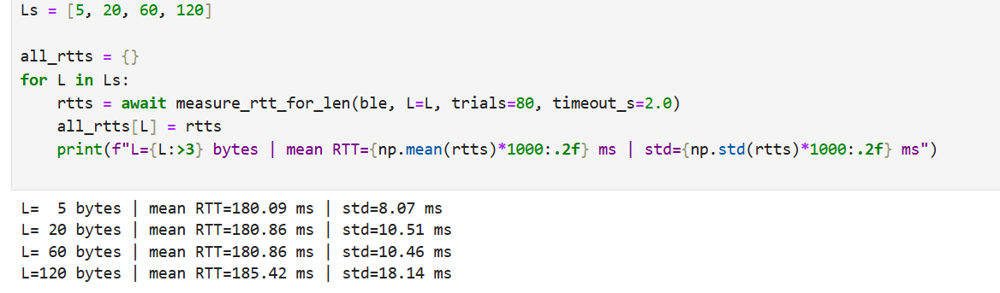
Figure 2.15 RTT statistics printed for each reply payload size.
def eff_rate_kbps(L, rtts):
m = float(np.mean(rtts))
return (8.0 * L / m) / 1000.0 # kbps
rates = [eff_rate_kbps(L, all_rtts[L]) for L in Ls]
mean_rtt_ms = [float(np.mean(all_rtts[L]) * 1000.0) for L in Ls]
print("\nEffective data rates:")
for L, r in zip(Ls, rates):
print(f" L={L:>3} bytes -> {r:.2f} kbps")
# Plot 1: reply size vs effective data rate
plt.figure()
plt.plot(Ls, rates, marker='o')
plt.xlabel("Reply size (bytes)")
plt.ylabel("Effective data rate (kbps)")
plt.title("BLE Effective Data Rate vs Reply Size")
plt.grid(True)
plt.show()
# Plot 2: reply size vs RTT
plt.figure()
plt.plot(Ls, mean_rtt_ms, marker='o')
plt.xlabel("Reply size (bytes)")
plt.ylabel("Mean RTT (ms)")
plt.title("BLE RTT vs Reply Size")
plt.grid(True)
plt.show()
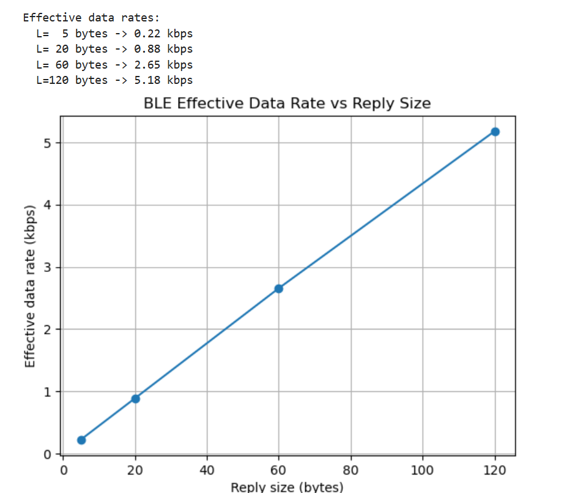
Figure 2.16 RTT statistics printed for each reply payload size.
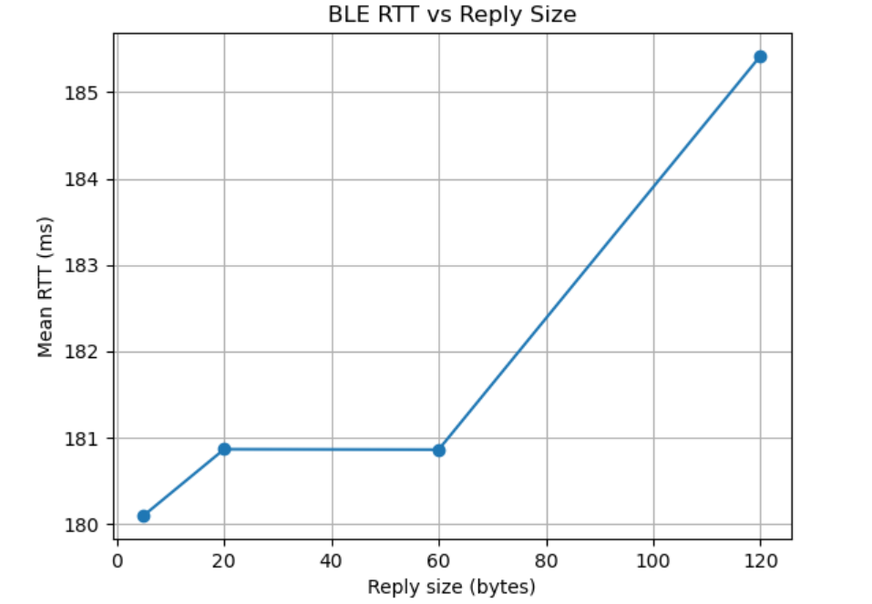
Figure 2.17 Effective data rate increases with reply size as fixed overhead is amortized.
Observation
Overall, larger replies improve the useful throughput because a greater fraction of the transmission is payload rather than fixed protocol overhead.
In contrast, very short replies suffer from overhead dominance: even if RTT is similar, the delivered payload per exchange is small, resulting in a lower effective data rate.
2) Reliability at Higher Streaming Rates
Next, I tested reliability by increasing the Artemis-to-laptop publish rate and checking whether the laptop receives all transmitted messages without loss.
I used a notification callback to count received packets and compared the received count against the expected count (and/or sequence continuity when available).
This reveals the onset of packet drops, delayed notifications, or instability as the streaming period becomes smaller (i.e., faster).
Code Snippet
periods_us = [20000, 10000, 5000, 2000, 1000, 500] # 50Hz -> 2000Hz
results = []
for p in periods_us:
res = await reliability_test_harduuid(ble, period_us=p, duration_s=5.0)
results.append(res)
print(res)
xs = [r["period_us"] for r in results if r["lost_rate"] is not None]
ys = [100.0 * r["lost_rate"] for r in results if r["lost_rate"] is not None]
plt.figure()
plt.plot(xs, ys, marker='o')
plt.gca().invert_xaxis()
plt.xlabel("Period (us) (smaller = faster)")
plt.ylabel("Loss rate (%)")
plt.title("Reliability: Loss rate vs Send period")
plt.grid(True)
plt.show()
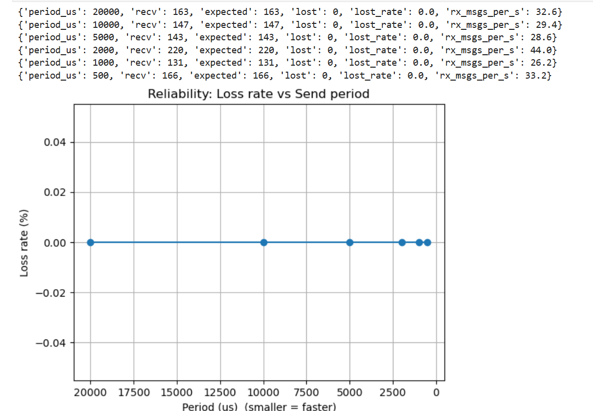
Figure 2.18 Reliability test results: loss rate versus send period.
As the send period decreases, the system may eventually become limited by BLE notification throughput and host-side processing/scheduling.
When the rate exceeds what the link can sustain, symptoms typically include missing packets, delayed arrivals, or increasing jitter.
In the stable region, expected and received counts match closely, indicating reliable delivery at that operating point.
Discussion
In this lab, I learned how to structure a BLE central–peripheral workflow using GATT services/characteristics,
and how to build a reusable command/response interface for data logging (string/float reads and notifications).
A key takeaway is that BLE throughput is strongly affected by protocol/processing overhead: larger payloads
achieve higher effective data rates because fixed per-message overhead is amortized, while very small packets
are inefficient.
The main challenges were keeping UUID/command mappings consistent across Arduino and Python and ensuring
notifications were parsed reliably. I addressed this by adding a lightweight Python notification handler
that parses formatted messages and uses an asyncio event to synchronize
request–reply timing and buffered transfers. This made it easier to verify “expected vs. received” counts and
diagnose issues such as mismatched command IDs or missing notifications.
Appendix
1. An announcement of AI usage
I used AI tools to support parts of this lab, mainly for webpage/HTML formatting, minor code edits and debugging,
and polishing the written explanations for clarity and conciseness. Throughout the assignment, I verified the
suggestions against the lab requirements, tested changes on my own setup, and made final design and implementation
decisions independently based on my own understanding.